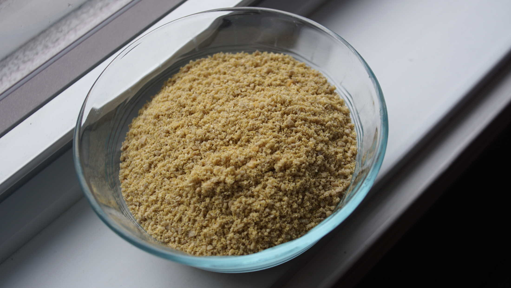

quick sunflower seed parmesan
100 g — 5 minutes
A simple recipe, for people with an allergy to tree nuts. Sunflower seeds come apart well, and like cashews or other nuts, create a pleasant texture and taste.
We made this parmesan to use over lasagna, it adds a bit of crunch to the top layer. It would also be delicious if sprinkled over pasta.

Food chopper. Aboard, we use an old meat grinder to grind nuts and seeds, it works well. If using a hand blender or food processor, it is possible to blend all of the ingredients together at once.
 sunflower seeds100 g
sunflower seeds100 g nutritional yeast12 g
nutritional yeast12 g garlic powder5 g
garlic powder5 g salt1.25 g
salt1.25 g
quick parmesan mix
- Process 100 g (3/4 cup) of unsalted and raw sunflower seeds in a food chopper(hand-operated or electric) into a fine grind. Transfer to a bowl, and mix with 12 g (3 tbsp) of nutritional yeast, 5 g (1/2 tsp) of garlic powder and a dash of salt.
- Store in an airtight container in a cool space.